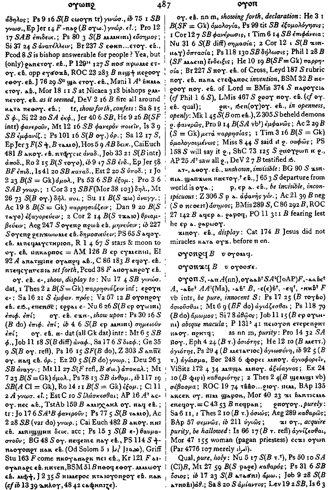

(verb)
intr: be pure, innocent [οσιουσθαι,
αγιαζεσθαι]
as nn m, purity [οσιοτησ, αγιοτησ]
qual: pure, holy [καθαροσ, αμιαντοσ, οσιοσ]
as nn m, purity [οσιοτησ, αγιοτησ]
qual: pure, holy [καθαροσ, αμιαντοσ, οσιοσ]
(S)
ⲟⲩⲟⲡ
(A) ⲟⲩⲁⲡ
(S, sA) ⲟⲩⲁⲁⲃ+
(A) ⲟⲩⲁⲁⲃⲉ+
(A, sA) ⲟⲩⲁⲃⲉ+
(B) ⲟⲩⲁⲃ+
(F) ⲟⲩⲉ(ⲉ)ⲃ+, ⲟⲩⲉϥ+, ⲟⲩⲏⲏⲃ+
(A) ⲟⲩⲁⲡ
(S, sA) ⲟⲩⲁⲁⲃ+
(A) ⲟⲩⲁⲁⲃⲉ+
(A, sA) ⲟⲩⲁⲃⲉ+
(B) ⲟⲩⲁⲃ+
(F) ⲟⲩⲉ(ⲉ)ⲃ+, ⲟⲩⲉϥ+, ⲟⲩⲏⲏⲃ+
| intr :2614 | Crum: 487b | ||||||||
| ϩⲛⲟⲩⲟⲩ. | purely [οσιωσ, καθαρωσ]2615 | ||||||||
| ϫⲓ ⲟⲩ. | acquire purity, be hallowed [αγνιζεσθαι]2616 | ||||||||
| (S, A, sA, F)
ⲡⲉⲧⲟⲩⲁⲁⲃ
(B) ⲡⲉⲑⲟⲩⲁⲁⲃ, ⲫⲏ ⲉⲑⲟⲩⲁⲁⲃ (S, A, sA, B, F) ⲛⲉⲧⲟⲩⲁⲁⲃ, ⲛⲏ ⲉⲑⲟⲩⲁⲁⲃ (ⲛ) |
who, what is pure, saint2617 | Crum: 488a | |||||||
| (S, F) ⲙⲛⲧⲡⲉⲧ., ⲙⲉⲧⲡⲉⲧ. | purity, holiness2618 | ||||||||
| (S, sA, F)
ⲟⲩⲏⲏⲃ
(ⲡ)
(A) ⲟⲩⲓⲉⲓⲃⲉ, ⲟⲩⲓⲃⲉ, ⲟⲩⲉⲓⲃⲉ (ⲡ) (B, F) ⲟⲩⲏⲃ (ⲡ) (F) ⲟⲩⲉⲃ, ⲟⲩⲏⲉⲃ, ⲟⲩⲉϥ (ⲡ) |
(noun male)
priest Christian or pagan [ιερευσ]2619 |
||||||||
| (S, B, F) ⲣ ⲟⲩ. | be priest [ιερατευειν]2620 | ||||||||
| (S, A, B, F) ⲙⲛⲧⲟⲩ., ⲙⲉⲧⲟⲩ. | priesthood [ιερατεια]2621 | ||||||||
See also:
| view | (S) ⲧⲃⲃⲟ (A) ⲧⲃⲟⲩⲟ (sA, B) ⲧⲟⲩⲃⲟ (F) ⲧⲉⲃ(ⲃ)ⲟ, ⲧⲉⲃ(ⲃ)ⲁ, ⲧⲟⲩⲃⲁ (S) ⲧⲃⲃⲉ- (B) ⲧⲟⲩⲃⲉ- (F) ⲧⲩⲃⲃⲁ- (S) ⲧⲃⲃⲟ= (A) ⲧⲃⲟⲩⲁ= (sA) ⲧⲟⲩⲃⲁ= (B) ⲧⲟⲩⲃⲟ= (S) ⲧⲃⲃⲏⲩ+ (A) ⲧⲃⲃⲟⲩⲁⲉⲓⲧ+ (sA) ⲧⲟⲩⲃⲁ(ⲉ)ⲓⲧ+, ⲧⲟⲩⲃⲏⲩ+ (B) ⲧⲟⲩⲃⲏⲟⲩⲧ+ (F) ⲧⲉⲃⲏⲟⲩⲧ+, ⲧⲩⲃⲃⲏⲟⲩⲧ+, ⲧⲉⲃⲏⲩ+ | (verb) intr: become, be pure
(causative of ⲟⲩⲟⲡ) [καθαροσ ειναι, καθαριζεσθαι, καθαιρεσθαι]
qual: [καθαροσ] tr: make pure, purify [καθαριζειν]222 |
| view | (S, B, F) ⲁⲡⲁ | (noun male) title of reverence, corresponding to αββασ 521 |
| view | (S, B) ϩⲟⲛⲧ (S) plural: (?) ϩⲱⲛⲧ | (noun male) pagan priest [ιερευσ, ιεροφαντησ]2222 |
| view | (S, O) ⲡⲱϣⲛ (F) ⲡⲱϣⲉⲛ (B) ⲫⲱϣⲉⲛ (S) ⲡⲉϣⲛ-, ⲡⲟϣⲛ= (B) ⲫⲟϣⲛ= (S) ⲡⲟϣⲛ+ (B) ⲫⲟϣⲛ+ | (verb) intr: do service,
serve as priest [λειτουργειν,
χειροτονειν]
tr: ― serve ― ordain to office209 |
Crum: 487,488

487

488
Dawoud: 240a-240b,
250a

240

250